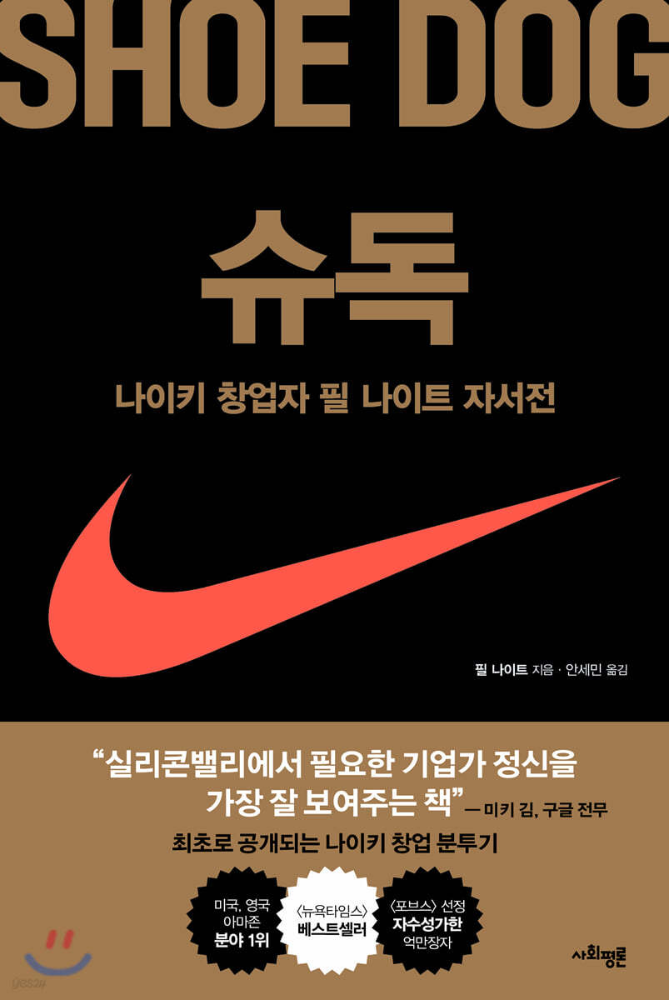

일론 머스크(Elon Musk)는 미국의 비즈니스 거물이자 스페이스X/테슬라 CEO인 일론 머스크의 전기이다. 이 책은 CNN, 타임지(TIME), 아스펜 연구소의 전 임원이자 벤저민 프랭클린, 알베르트 아인슈타인, 스티브 잡스, 레오나르도 다빈치의 베스트셀러 전기를 집필한 월터 아이작슨이 썼다. 2023년 9월 12일 사이먼 & 슈스터(Simon & Schuster)에 의해 출판되었다.
신발 연구에 미친 사람’이란 은어인 『슈독Shoe Dog』은 가진 것이라곤 무모한 열정과 끈기밖에 없었던 24살 청년, 필 나이트가 일본 운동화를 수입해 팔던 보따리 장사를 세계적 브랜드 나이키로 일궈내기까지의 과정을 다룬, 최초의 자서전이자 나이키의 역사서이다.
.